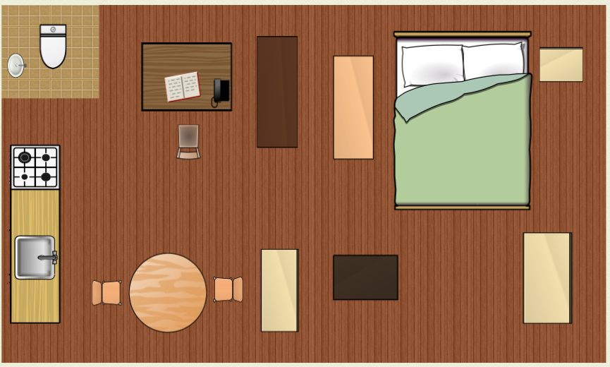

The Fieldsite
My fieldsite was a one-bedroom flat near King's Cross, London. The flat was located on the second floor of a four-storey residential block on the quieter side of a high street.
The floor plan of the flat is as follows.

The area one encountered first when entering the door was the bedroom. There were walls that separated the bedroom and the living room and kitchen. The living room area was transformed into a personal library.
The Participant
The occupant of the flat was a first-year female PhD student in a social science department at a university in London. She was originally from Taiwan and studied her Master's degree in the U.K a few years ago.
C (psyeudonym) identified herself as a bibliophile. As she went back to Taiwan for several years after completing her Master's degree, she had sent her book collection to her parents' home back then. Some of that collection and the materials she acquired during her life in Taiwan traveled with her to London again after she commenced PhD studies, and her current collection in the London flat had since grown with new additions.
Digital Devices in the Home
C had used the following digital devices for purposes of studying and casual reading.
- Laptop: Microsoft Surface Pro
- E-Reader: Kindle 6" Glare-Free Touchscreen Display
- Mobile Phone: Sony Xperia Z3
Research Period
- The first visit and the initial interview took place in early November, 2015.
- Participant observation took place in mid-November, 2015.
- The participant logged diary entries between mid-November and late November, 2015.
- The final visit to the home and the concluding interview happened in early December, 2015.